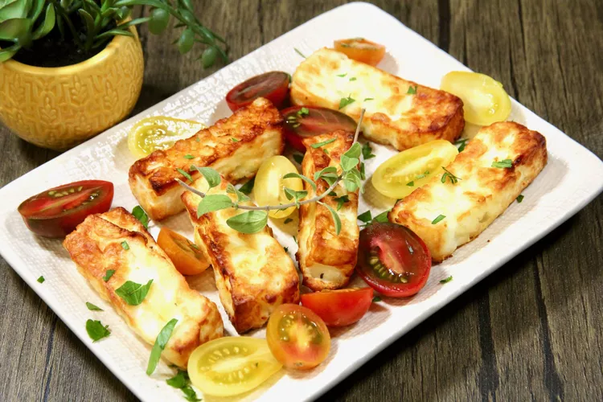

Air Fryer Halloumi Cheese

Description
This is a breeze to make in the air fryer, and we like to serve it with sliced cherry tomatoes, freshly-chopped herbs or occasionally a drizzle of balsamic glaze.
Ingredient
- 8 ounces halloumi cheese
- 2 teaspoons olive oil
- cooking spray
Steps
- Preheat the air fryer to 360 degrees F (180 degrees C).
- Slice halloumi into 6 equal slices, cut each slice in half, and dry with a paper towel. Brush all sides with olive oil.
- Lightly spray the air fryer basket with cooking spray. Place the halloumi slices in the basket, making sure they're not touching. You may have to cook in two batches,
- Cook for 7 to 9 minutes until golden brown, but make sure not to overcook or they turn rubbery. Serve immediately.